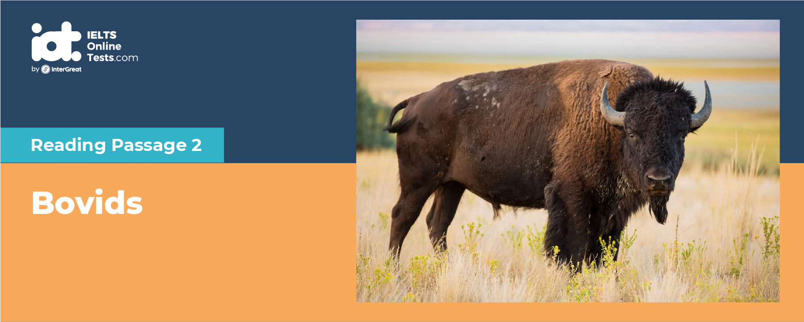

Part 1
READING PASSAGE 1
You should spend about 20 minutes on Questions 1-13, which are based on Reading Passage 1 below.

Toxic Stress: A Slow Wear And Tear
Our bodies are built to respond when under attack. When we sense danger, our brain goes on alert, our heart rate goes up, and our organs flood with stress hormones like cortisol and adrenaline. We breathe faster, taking in more oxygen, muscles tense, our senses are sharpened and beads of sweat appear. This combination of reactions to stress is also known as the "fight-or-flight" response because it evolved as a survival mechanism, enabling people and other mammals to react quickly to life-threatening situations. The carefully orchestrated yet near-instantaneous sequence of hormonal changes and physiological responses helps someone to fight the threat off or flee to safety. Unfortunately, the body can also overreact to stressors that are not life-threatening, such as traffic jams, work pressure, and family difficulties.
That's all fine when we need to jump out of the way of a speeding bus, or when someone is following us down a dark alley. In those cases, our stress is considered "positive", because it is temporary and helps us survive. But our bodies sometimes react in the same way to more mundane stressors, too. When a child faces constant and unrelenting stress, from neglect, or abuse, or living in chaos, the response stays activated, and may eventually derail normal development. This is what is known as "toxic stress". The effects are not the same in every child, and can be buffered by the support of a parent or caregiver, in which case the stress is considered "tolerable". But toxic stress can have profound consequences, sometimes even spanning generations. Figuring out how to address stressors before they change the brain and our immune and cardiovascular systems is one of the biggest questions in the field of childhood development today.
In 1998, two researchers, Vincent Felitti and Robert Anda, pioneered in publishing a study demonstrating that people who had experienced abuse or household dysfunction as children were more likely to have serious health problems, like cancer or liver diseases, and unhealthy lifestyle habits, like drinking heavily or using drugs as adults. This became known as the "ACE Study," short for "adverse childhood experiences." Scientists have since linked more than a dozen forms of ACEs - including homelessness, discrimination, and physical, mental, and sexual abuse - with a higher risk of poor health in adulthood.
Every child reacts to stress differently, and some are naturally more resilient than others. Nevertheless, the pathways that link adversity in childhood with health problems in adulthood lead back to toxic stress. As Jenny Anderson, senior reporter at Quartz, explains, "when a child lives with abuse, neglect, or is witness to violence, he or she is primed for that fight or flight all the time. The burden of that stress, which is known as 'allostatic load or overload,' referring to the wear and tear that results from either too much stress or from inefficient management of internal balance, eg, not turning off the response when it is no longer needed, can damage small, developing brains and bodies. A brain that thinks it is in constant danger has trouble organising itself, which can manifest itself later as problems of paying attention, or sitting still, or following instructions - all of which are needed for learning".
Toxic is a loaded word. Critics say the term is inherently judgmental and may appear to blame parents for external social circumstances over which they have little control. Others say it is often misused to describe the source of stress itself rather than the biological process by which it could negatively affect some children. The term, writes John Devaney, centenary chair of social work at the University of Edinburgh, "can stigmatise individuals and imply traumatic happenings in the past".
Some paediatricians do not like the term because of how difficult it is to actually fix the stressors their patients face, from poverty to racism. They feel it is too fatalistic to tell families that their child is experiencing toxic stress, and there is little they can do about it. But Nadine Burke Harris, surgeon general of California, argues that naming the problem means we can dedicate resources to it so that paediatricians feel like they have tools to treat "toxic stress".
The most effective prevention for toxic stress is to reduce the source of the stress. This can be tricky, especially if the source of the stress is the child's own family. But parent coaching, and connecting families with resources to help address the cause of their stress (sufficient food, housing insecurity, or even the parent's own trauma), can help. Another one is to ensure love and support from a parent or caregiver. Young children's stress responses are more stable, even in difficult situations, when they are with an adult they trust.
As Megan Gunnar, a child psychologist and head of the Institute of Child at the University of Minnesota, said: "When the parent is present and relationship is secure, basically the parent eats the stress: the kid cries, the parent comes, and it doesn't need to kick in the big biological guns because the parent is the protective system". That is why Havard's Center on the Developing Child recommends offering care to caregivers, like mental health or addiction support, because when they are healthy and well, they can better care for their children.
Part 2
READING PASSAGE 1
You should spend about 20 minutes on Questions 14-26, which are based on Reading Passage 1 below.

Bovids
A
The family of mammals called bovids belongs to the Artiodactyl class, which also includes giraffes. Bovids are a highly diverse group consisting of 137 species, some of which are man’s most important domestic animals.
B
Bovids are well represented in most parts of Eurasia and Southeast Asian islands, but they are by far the most numerous and diverse in the latter Some species of bovid are solitary, but others live in large groups with complex social structures. Although bovids have adapted to a wide range of habitats, from arctic tundra to deep tropical forest, the majority of species favour open grassland, scrub or desert. This diversity of habitat is also matched by great diversity in size and form: at one extreme is the royal antelope of West Africa, which stands a mere 25 cm at the shoulder; at the other, the massively built bison of North America and Europe, growing to a shoulder height of 2.2m.
C
Despite differences in size and appearance, bovids are united by the possession of certain common features. All species are ruminants, which means that they retain undigested food in their stomachs, and regurgitate it as necessary. Bovids are almost exclusively herbivorous: plant-eating “incisors: front teeth herbivorous”.
D
Typically their teeth are highly modified for browsing and grazing: grass or foliage is cropped with the upper lip and lower incisors** (the upper incisors are usually absent), and then ground down by the cheek teeth. As well as having cloven, or split, hooves, the males of ail bovid species and the females of most carry horns. Bovid horns have bony cores covered in a sheath of horny material that is constantly renewed from within; they are unbranched and never shed. They vary in shape and size: the relatively simple horns of a large Indian buffalo may measure around 4 m from tip to tip along the outer curve, while the various gazelles have horns with a variety of elegant curves.
E
Five groups, or sub-families, may be distinguished: Bovinae, Antelope, Caprinae, Cephalophinae and Antilocapridae. The sub-family Bovinae comprises most of the larger bovids, including the African bongo, and nilgae, eland, bison and cattle. Unlike most other bovids they are all non-territorial. The ancestors of the various species of domestic cattle banteng, gaur, yak and water buffalo are generally rare and endangered in the wild, while the auroch (the ancestor of the domestic cattle of Europe) is extinct.
F
The term ‘antelope is not a very precise zoological name – it is used to loosely describe a number of bovids that have followed different lines of development. Antelopes are typically long-legged, fast-running species, often with long horns that may be laid along the back when the animal is in full flight. There are two main sub-groups of antelope: Hippotraginae, which includes the oryx and the addax, and Antilopinae, which generally contains slighter and more graceful animals such as gazelle and the springbok. Antelopes are mainly grassland species, but many have adapted to flooded grasslands: pukus, waterbucks and lechwes are all good at swimming, usually feeding in deep water, while the sitatunga has long, splayed hooves that enable it to walk freely on swampy ground.
G
The sub-family Caprinae includes the sheep and the goat, together with various relatives such as the goral and the tahr. Most are woolly or have long hair. Several species, such as wild goats, chamois and ibex, are agile cliff – and mountain-dwellers. Tolerance of extreme conditions is most marked in this group: Barbary and bighorn sheep have adapted to arid deserts, while Rocky Mountain sheep survive high up in mountains and musk oxen in arctic tundra.
H
The duiker of Africa belongs to the Cephalophinae sub-family. It is generally small and solitary, often living in thick forest. Although mainly feeding on grass and leaves, some duikers – unlike most other bovids – are believed to eat insects and feed on dead animal carcasses, and even to kill small animals.
I
The pronghorn is the sole survivor of a New World sub-family of herbivorous ruminants, the Antilocapridae in North America. It is similar in appearance and habits to the Old World antelope. Although greatly reduced in numbers since the arrival of Europeans, and the subsequent enclosure of grasslands, the pronghorn is still found in considerable numbers throughout North America, from Washington State to Mexico. When alarmed by the approach of wolves or other predators, hairs on the pronghorn’s rump stand erect, so showing and emphasizing the white patch there. At this signal, the whole herd gallops off at speed of over 60 km per hour.
Part 3
READING PASSAGE 3
You should spend about 20 minutes on Questions 27-40, which are based on Reading Passage 1 below.

The value of research into mite harvestmen
Few people have heard of the mite harvestman, and fewer still would recognize it at close range. The insect is a relative of the far more familiar daddy longlegs. But its legs are stubby rather than long, and its body is only as big as a sesame seed. To find mite harvestmen, scientists go to dark, humid forests and sift through the leaf litter. The animals respond by turning motionless, making them impossible for even a trained eye to pick out.’ They look like grains of dirt.’ said Gonzalo Giribet, an invertebrate biologist at Harvard University.
Dr Giribet and his colleagues have spent six years searching for mite harvestmen on five continents. The animals have an extraordinary story to tell they carry a record of hundreds of millions of years of geological history, chronicling the journeys that continents have made around the Earth. The Earth’s landmasses have slowly collided and broken apart again several times, carrying animals and plants with them. These species have provided clues to the continents’ paths.
The notion of continental drift originally came from such clues. In 1911, the German scientist Alfred Wegener was struck by the fact that fossils of similar animals and plants could be found on either side of the Atlantic. The ocean was too big for the species to have traveled across it on their own. Wegener speculated correctly, as it turned out that the surrounding continents had originally been welded together in a single landmass, which he called Pangea.
Continental drift, or plate tectonics as it is scientifically known, helped move species around the world. Armadillos and their relatives are found in South America and Africa today because their ancestors evolved when the continents were joined. When South America and North America connected a few million years ago, armadillos spread north, too.
Biogeographers can learn clues about continental drift by comparing related species. However, they must also recognize cases where species have spread for other reasons, such as by crossing great stretches of water. The island of Hawaii, for example, was home to a giant flightless goose that has become extinct. Studies on DNA extracted from its bones show that it evolved from the Canada goose. Having colonized Hawaii, it branched off from that species, losing its ability to fly. This evolution occurred half a million years ago, when geologists estimate that Hawaii emerged from the Pacific.
When species jump around the planet, their histories blur. It is difficult to say much about where cockroaches evolved, for example, because they can move quickly from continent to continent. This process, known as dispersal, limits many studies. ‘Most of them tend to concentrate on particular parts of the world.' Dr Giribet said. I wanted to find a new system for studying biogeography on a global scale.
Dr Giribet realized that mite harvestmen might be that system. The 5,000 or so mite harvestmen species can be found on every continent except Antarctica. Unlike creatures found around the world like cockroaches, mite harvestmen cannot disperse well. The typical harvestman species has a range of fewer than 50 miles. Harvestmen are not found on young islands like Hawaii, as these types of islands emerged long after the break-up of Pangea.
According to Assistant Professor Sarah Boyer, a former student of Dr Giribet. ‘It’s really hard to find a group of species that is distributed all over the world but that also doesn’t disperse very far.'
What mite harvestmen lack in mobility, they make up in age. Their ancestors were among the first land animals, and fossils of daddy longlegs have been found in 400 million-year-ago rocks. Mite harvestmen evolved long before Pangea broke up and have been carried along by continental drift ever since they’ve managed to get themselves around the world only because they’ve been around for hundreds of millions of years, Dr Boyer said. Dr Boyer, Dr Giribet and their colleagues have gathered thousands of mite harvestmen from around the world, from which they extracted DNA. Variations in the genes helped the scientists build an evolutionary tree. By calculating how quickly the DNA mutated, the scientists could estimate when lineages branched off. They then compared the harvestmen's evolution to the movements of the continents. ‘The patterns are remarkably clear.’ Dr Boyer said.
The scientists found that they could trace mite harvestmen from their ancestors on Pangea. One lineage includes species in Chile South Africa, Sri Lanka and other places separated by thousands of miles of ocean. But 150 million years ago, all those sites were in Gondwana which was a region of Pangea.
The harvestmen preserve smaller patterns of continental drift, as well as bigger ones. After analyzing the DNA of a Florida harvestman, Metasiro americanus, the scientists were surprised to find that it was not related to other North American species. Its closet relatives live in West Africa. Dr Boyer then began investigating the geological history of Florida and found recent research to explain the mystery. Florida started out welded to West Africa near Segenal. North America than collied into them Pangea was forming. About 170 million years ago, North America ripped away from West Africa, taking Florida with it. The African ancestors of Florida’s harvestmen came along the ride.
Dr Giribet now hopes to study dozens or even hundreds of species, to find clues about plate tectonics that a single animal could not show.
Part 1
Questions 1-6
The reading passage has six paragraphs, A-F.
Choose the correct heading for each paragraph from the list of headings below.
Write the correct number (i-vii) in boxes.
| List of Headings | ||
| i. | The controversy around the word “toxic” | |
| ii. | Effects of different types of stress | |
| iii. | How to protect children from toxic stress | |
| iv. | An association of adverse experience with health problems and unhealthy habits | |
| v. | Body’s reactions in response to the perceived harmful event | |
| vi. | Signs of being under sustained stress | |
| vii. | Negative impacts of toxic stress on children’s mental health | |
1. Paragraph A
2. Paragraph B
3. Paragraph C
4. Paragraph D
5. Paragraph E
6. Paragraph F
Questions 7-9
Do the following statements agree with the information given in Reading Passage?
In boxes 7-9 on your answer sheet, write:
| TRUE. | if the statement agrees with the information | |
| FALSE. | if the statement contradicts the information | |
| NOT GIVEN. | If there is no information on this |
7. Felitti and Anda were the first to show that ACEs create impacts regarding health and habits later on in life.
8. Some children have the same level of vulnerability to stressful events.
9. Several paediatricians consider poverty and racism the primary contributors to toxic stress.
Questions 10-13
Look at the following people and the list of statements below.
Match each person with the correct statement, A-E.
Write the correct letter A-E in boxes.
| List of statements | ||
| A. | Traumatic experiences in childhood might lead to poor self-management | |
| B. | Supportive and responsive relationships with caring parents can prevent or reverse the damaging effects of toxic stress responses. | |
| C. | Properly naming a type of stress can facilitate its treatment process. | |
| D. | The real name of a particular form of stress could denounce a number of people. | |
| E. | Toxic stress can cause the next generations to suffer from negative consequences on both mental and physical health problems. | |
10. Megan Gunnar
11. Jenny Anderson
12. John Devaney
13. Nadine Burke Harris
Part 2
Questions 14-16
Choose the correct letter, A, B, C or D.
Write your answers in boxes 14-16 on your answer sheet.
Questions 17-21
Look at the following characteristics (Questions 17-21) and the list of sub-families below.
Match each characteristic with the correct sub-family, A, B, C or D.
Write the correct letter, A, B, C or D, in boxes 17-21 on your answer sheet.
NB You may use any letter more than once
| List of sub-families | ||
| A. | Antelope | |
| B. | Bovinae | |
| C. | Caprinae | |
| D. | Cephalophinae | |
17. can endure very harsh environments
18. includes the ox and the cow
19. may supplement its diet with meat
20. can usually move a speed
21. does not defend a particular area of land
Questions 22-26
Answer the questions below.
Choose NO MORE THAN THREE WORDS from the passage for each answer.
Write your answers in boxes 22-26 on your answer sheet.
What is the smallest species of Bovid called?
22
Which species of Bovinae hos now died out?
23
What facilitates the movement of the sitatunga over wetland?
24
What sort of terrain do barbary sheep live in?
25
What is the only living member of the Antilocapridae sub-family?
26
Part 3
Questions 27-32
Choose the correct letter A, B, C or D.
Write the correct letter in boxes 27-32 on your answer sheet.
Questions 33-36
Do the following statements agree with the claims of the writer in Reading Passage?
In boxes 33-36 on your answer sheet, write
| YES. | if the statement agrees with the views of the writer | |
| NO. | if the statement contradicts the views of the writer | |
| NOT GIVEN. | if it is impossible to say what the writer thinks about this |
33. The colonization of Hawaii by geese provides evidence of continental drift.
34. The reason why mite harvestmen don’t exist on Hawaii can be explained.
35. The DNA of certain species has evolved more quickly than that of others.
36. Dr Boyer’s theory concerning the origins of Florida is widely accepted.
Questions 37-40
Complete the summary using the list of words A-I below.
Write the correct letter A-I in boxes 37-40 on your answer sheet.
| List of words | ||
| A. | branches | |
| B. | fossils | |
| C. | drift | |
| D. | DNA | |
| E. | evolution | |
| F. | Pangea | |
| G. | dispersal | |
| H. | ancestors | |
| I. | continents | |
The age and evolution of mite harvestmen
Some of the first creatures to live on land were the 37. of mite harvestmen. Boyer, Giribet and others study differences in the 38. of these insects, and trace the development of a number of 39. of the species.
Their evolution appears to reflect changes in the location of 40.. For example, the same type of mite harvestman is found in places that are now far apart but used to form Gondwana, part of a huge landmass.